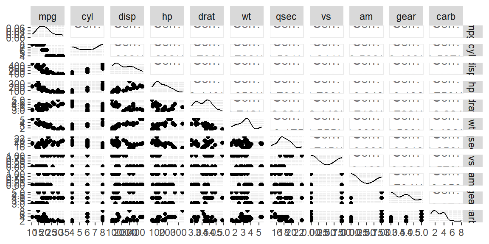
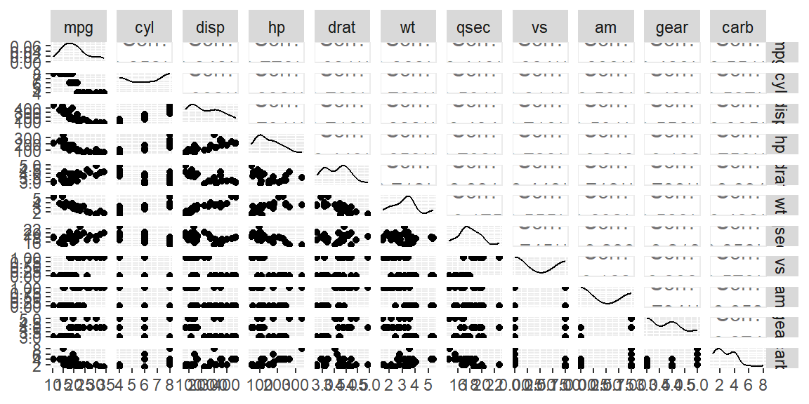
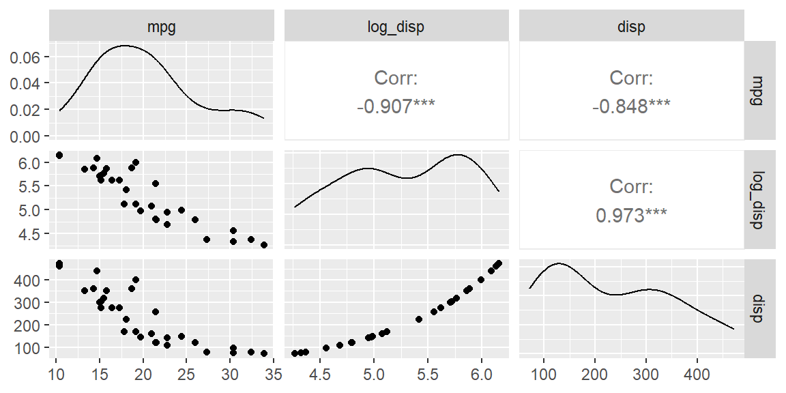
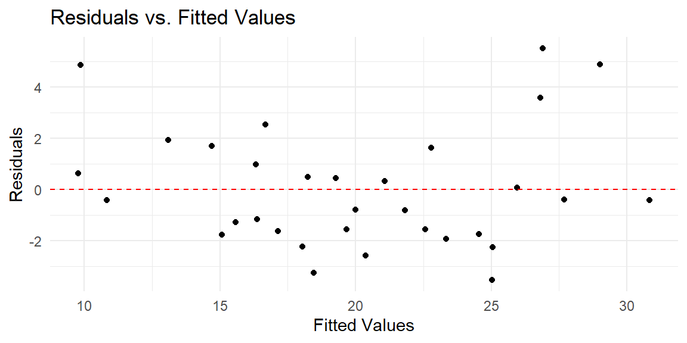
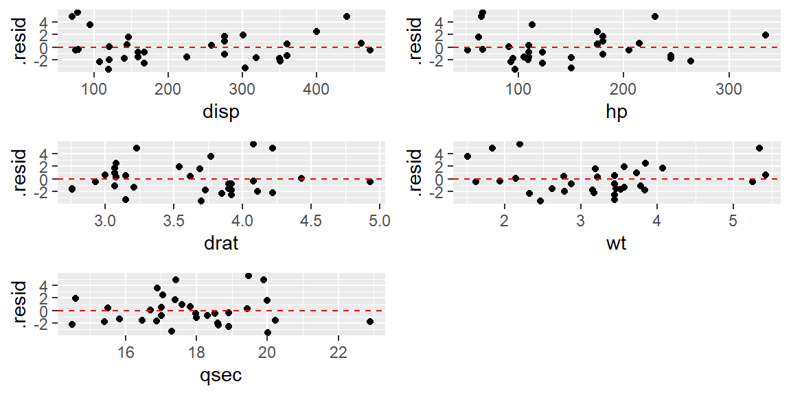
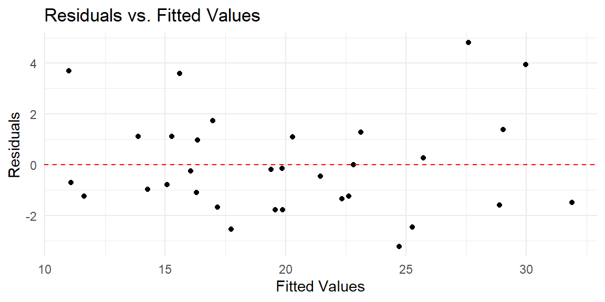

library(GGally)
ggpairs(mtcars)
“Non-linear means it’s hard to solve.” - Arthur Mattuck
The first step in assessing the linearity assumption in a multiple regression model is to examine the relationships between the predictor variables and the response variable using a scatterplot matrix. This matrix provides a grid of pairwise scatterplots, allowing you to visualize potential relationships between all pairs of variables, especially the relationship between each predictor and the response variable.
In the context of multiple regression, we expect that the relationship between each predictor and the response is approximately linear. If the scatterplot for a given predictor and the response shows a straight-line trend, this suggests a linear relationship, which aligns with the assumption. However, if the plot exhibits a clear curved or nonlinear pattern, it may indicate that the linearity assumption is violated for that predictor, and you may need to transform the variable to better capture the relationship.
A scatterplot matrix is a convenient way to quickly scan for any nonlinearity before fitting the model. You can create this matrix using the GGally package in R, which extends ggplot2 to allow for a grid of scatterplots. Each scatterplot shows how one variable changes in response to another, and from this, you can judge whether a linear transformation is needed for any predictor variables before fitting the regression model.
Example:
library(GGally)
ggpairs(mtcars)
In this example, the ggpairs function creates a scatterplot matrix for the mtcars dataset. Each plot in the matrix shows the relationship between two variables. By focusing on the plots that involve the response variable (mpg in this case), you can assess whether the relationships between the response and each predictor (like wt or hp) appear linear. If any plot shows a nonlinear trend, it suggests that a transformation might be necessary to achieve a linear relationship.
This initial diagnostic step is crucial because it allows you to anticipate issues with linearity before fitting the regression model, ensuring a better fit and more reliable interpretation of the results.
When a predictor variable has only a few discrete values, such as in the case of gear or cyl in the mtcars dataset, the scatterplot matrix will show points aligned vertically or horizontally at specific values. These discrete predictors can make it harder to judge linearity directly because the relationships are less continuous. Instead of a smooth trend, look for general patterns in how the response variable changes across the levels of the predictor. If the response values vary systematically across the predictor levels (e.g., a noticeable upward or downward shift), it may still indicate a linear trend. However, if the response varies non-linearly (e.g., higher values in the middle category and lower values on the ends), it may suggest that a transformation, such as using polynomial terms, or treating the predictor as a categorical variable, could improve the model.
For example, the cyl predictor in the mtcars dataset has only three distinct values (4, 6, and 8). If the corresponding mpg values show a clear linear decrease as cyl increases, this supports linearity. However, if the trend is irregular, a transformation or alternative approach may be necessary.
When the scatterplot matrix suggests nonlinearity between a predictor and the response, it may be necessary to transform the predictor variable to improve the linear relationship. Common transformations include logarithmic, square root, and polynomial transformations. These transformations help capture nonlinear patterns and make relationships more linear, ensuring the regression model provides accurate estimates.
In the tidyverse, transformations can be easily applied using mutate() from the dplyr package. You can then incorporate these transformed variables into your regression model within the Tidymodels framework.
Example 16.1 (Log transformation in mtcars) The scatterplot matrix showed a non-linear trend for disp versus mpg. Let’s transformed this variable using a log transformation.
library(tidyverse)
# Add a log-transformed variable for weight (wt)
mtcars |>
mutate(log_disp = log(disp)) |>
select(mpg, log_disp, disp) |>
ggpairs()
We see the scatterplot between mpg and log_disp appears more linear than with the untransformed disp.
After identifying and applying transformations, the next step is to fit a multiple regression model using the transformed predictors. This ensures that the model aligns with the linearity assumption, yielding more reliable predictions and inferences. Below is an example of how to fit such a model.
Example 16.2 We will setup two models: one with transformed variables and one without transformed variables. We will then compare the results using \(R^2\). We will transform disp, hp, and wt since these three variables appear to be nonlinear in the scatterplot matrix. We will not include the discrete variables in this example.
library(tidymodels)
#untransformed variables
dat_recipe = recipe(mpg ~ disp + hp + drat + wt + qsec, data = mtcars)
lm_model <- linear_reg() |>
set_engine("lm")
wf = workflow() |>
add_recipe(dat_recipe) |>
add_model(lm_model)
fit_untransformed <- wf |> fit(mtcars)
fit_untransformed |> glance()# A tibble: 1 × 12
r.squared adj.r.squared sigma statistic p.value df logLik AIC BIC
<dbl> <dbl> <dbl> <dbl> <dbl> <dbl> <dbl> <dbl> <dbl>
1 0.849 0.820 2.56 29.2 6.89e-10 5 -72.1 158. 169.
# ℹ 3 more variables: deviance <dbl>, df.residual <int>, nobs <int>Now we will fit the model with the transformed variables.
# transformed variables
dat_recipe = recipe(mpg ~ disp + hp + drat + wt + qsec, data = mtcars) |>
step_mutate(
log_disp = log(disp),
log_hp = log(hp),
log_wt = log(wt)
) |>
step_rm(disp, hp, wt)
lm_model <- linear_reg() |>
set_engine("lm")
wf = workflow() |>
add_recipe(dat_recipe) |>
add_model(lm_model)
fit_transformed <- wf |> fit(mtcars)
fit_transformed |> glance()# A tibble: 1 × 12
r.squared adj.r.squared sigma statistic p.value df logLik AIC BIC
<dbl> <dbl> <dbl> <dbl> <dbl> <dbl> <dbl> <dbl> <dbl>
1 0.892 0.871 2.16 43.0 9.14e-12 5 -66.7 147. 158.
# ℹ 3 more variables: deviance <dbl>, df.residual <int>, nobs <int>Note the improvement in the coefficient of determination. It has increased with the transformed variables.
After fitting the model, it’s essential to validate that the transformations improved the linear relationship between the predictors and the response. This can be achieved by examining the residuals.
If the linearity assumption holds, the residuals should appear randomly scattered around zero in the residual plot, with no obvious patterns. Systematic patterns, such as curves, indicate remaining nonlinearity, suggesting that further transformations or a different model might be necessary.
Example 16.3 Let’s first examine the fit with the untransformed variables.
#obtain the residuals and fitted values from the fit
predictions_untransformed = extract_fit_engine(fit_untransformed) |>
augment()
predictions_untransformed |>
ggplot(aes(x = .fitted, y = .resid)) +
geom_point() +
geom_hline(yintercept = 0, linetype = "dashed", color = "red") +
labs(x = "Fitted Values",
y = "Residuals",
title = "Residuals vs. Fitted Values") +
theme_minimal()
We see from this residual plot that there is a nonlinear pattern. That is, the residuals tend to be above 0 at the low end, then they tend to be below 0 in the middle, then they tend to be back above 0 at the high end. If there are not that many predictors, you can plot the residuals against each predictor and determine which one needs to be transformed.
Let’s first examine the fit with the untransformed variables.
library(gridExtra)
p1 = predictions_untransformed |>
ggplot(aes(x = disp, y = .resid)) +
geom_point() +
geom_hline(yintercept = 0, linetype = "dashed", color = "red")
p2 = predictions_untransformed |>
ggplot(aes(x = hp, y = .resid)) +
geom_point() +
geom_hline(yintercept = 0, linetype = "dashed", color = "red")
p3 = predictions_untransformed |>
ggplot(aes(x = drat, y = .resid)) +
geom_point() +
geom_hline(yintercept = 0, linetype = "dashed", color = "red")
p4 = predictions_untransformed |>
ggplot(aes(x = wt, y = .resid)) +
geom_point() +
geom_hline(yintercept = 0, linetype = "dashed", color = "red")
p5 = predictions_untransformed |>
ggplot(aes(x = qsec, y = .resid)) +
geom_point() +
geom_hline(yintercept = 0, linetype = "dashed", color = "red")
grid.arrange(p1, p2, p3, p4, p5, nrow = 3)
Combinig these residuals plots with the scatterplot matrix, it appears that disp, hp, and wt are clearly nonlinear.
Let’s now see the residual plot for the transformed variables.
#obtain the residuals and fitted values from the fit
predictions_transformed = extract_fit_engine(fit_transformed) |>
augment()
predictions_transformed |>
ggplot(aes(x = .fitted, y = .resid)) +
geom_point() +
geom_hline(yintercept = 0, linetype = "dashed", color = "red") +
labs(x = "Fitted Values",
y = "Residuals",
title = "Residuals vs. Fitted Values") +
theme_minimal()
This residual plot shows no obvious nonlinear pattern. Thus, the transformations helped.